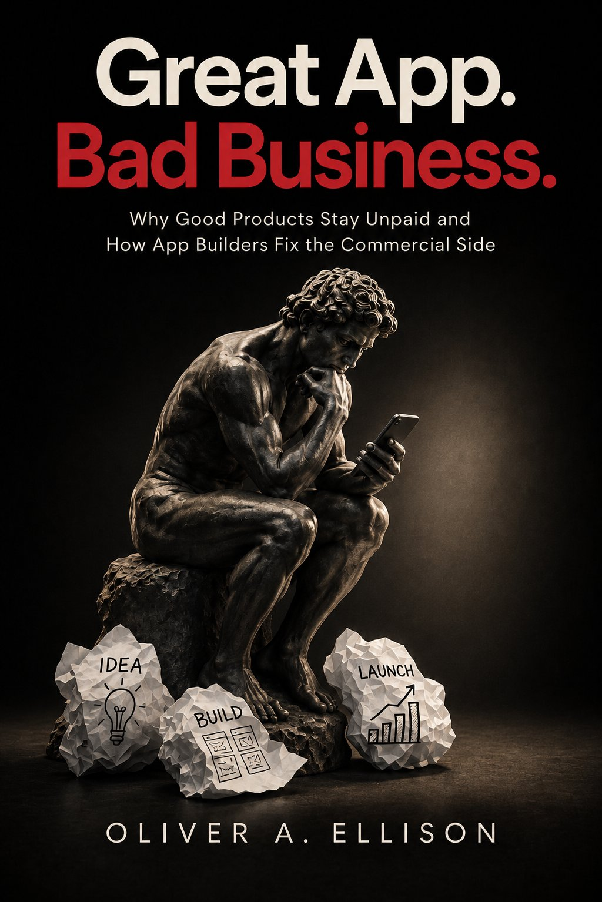

Book
Great App. Bad Business.
Why Good Products Stay Unpaid and How App Builders Fix the Commercial Side
Oliver A. Ellison · ISBN 9798171849252
You built something real. The app works. That does not mean the business works.
Read the authorized HTML edition in the browser if you would rather not download a PDF.
Who it is for
App builders, technical founders, indie hackers, SaaS founders, AI-assisted builders, and developers who have shipped or nearly shipped something real, with weak or uncertain revenue.
What the book is actually about
AI made software dramatically easier to build. It did not make people care, trust, buy, pay, or stay. The work is finding where the path to payment is breaking, not adding another feature to a product nobody has a reason to purchase.
- Shipping is the starting line.
- Usage is not payment.
- Persona is not demand.
- Pain is not enough.
- A feature request is not demand.
- "I'd use this" is not a purchase.
- Trust is a separate commercial constraint.
- Pricing is a hypothesis.
- The market gets a vote.
- Do not automate a guess.
Commercial diagnostic sequence
Companion resource
The Shipped-to-Paid Field Guide is the working version of the book’s Practical Tools: worksheets plus a short intake that produces a Commercial Frontier Report. Use the tools in the browser, print them, or save the report as a file. You do not need to buy the book.
Get a Commercial Frontier Report Open the worksheets
Make it RAIN applies some of the same commercial questions in software. The book and the Field Guide stand on their own.